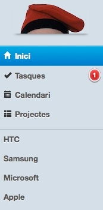
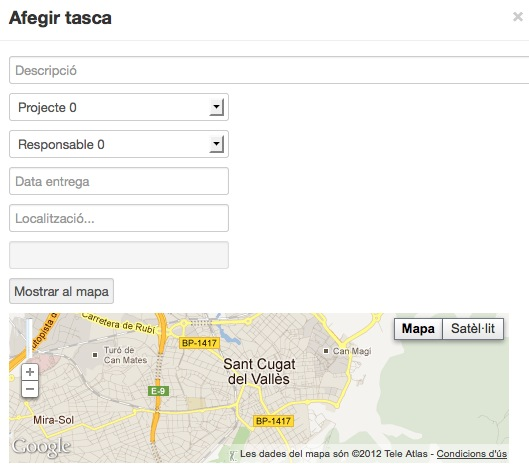
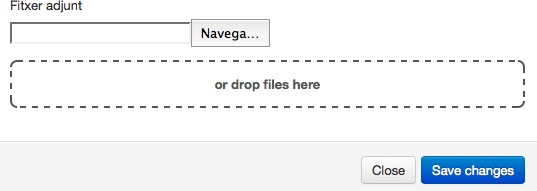
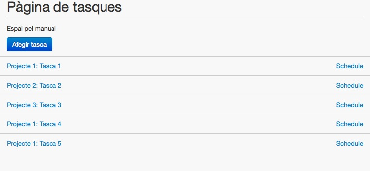
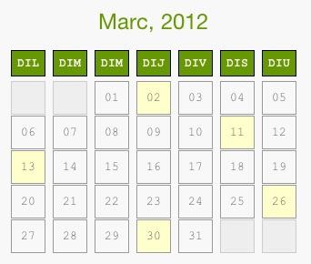
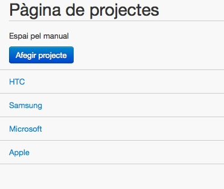
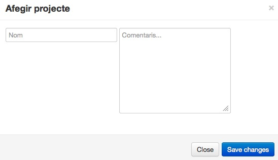

Mou les fletxes del teclat per avançar o retrocedir.
Aquest és el menú principal de la nostre aplicació. La podeu trobar a la part esquerre de la pantalla.

La primera pàgina que trobareu serà la de "Inici". Des d'aqui, podreu veure totes les tasques i projectes disponibles. D'altre banda, podreu accedir al manual.

Si premeu afegir tasca, a l'apartat de dalt, us sortirà la següent pàgina:

Haureu d'afegir la descripció de la tasca, a quin projecte està, quí és el responsable, la data d'entrega, la localització (On quedarà reflectit al mapa) i per finalitzar, es podrà adjuntar un fitxer simplement arrosegant-lo cap al cercle que veureu en pantalla.

Si anem a la pàgina "Tasques", el que ens trobarem serà una pàgina similar a la d'Inici. Podrem veure les tasques disponibles, crear-ne de noves i/o eliminar-les.

Si anem a la pàgina "Calendari", podrem veure totes les tasques que hem de fer. D'aquesta manera, serà més fàcil organitzar-nos. I podrem accedir clickant a sobre de cada tasca.

A la pàgina de projectes, podreu veure els projectes existens i/o crear-ne de nous. Per crear-ne un de nou, haureu de prémer "Afegir projecte".

La pestanya d'afegir projectes és simple. Per afegir-ne un de nou, simplement heu d'omplir el nom del projecte i posar algún comentari
